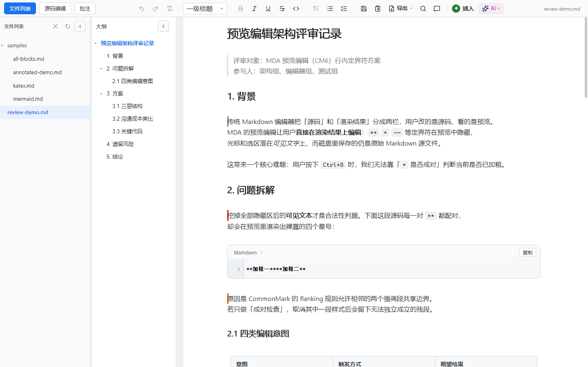

批注在文件里
一条标准 Markdown 注释承载结构化批注。GitHub、Typora、Obsidian 都看不见它，git diff 却看得一清二楚——换工具不丢。
本地优先 · 开源 MIT · 完全免费
打开 .md，直接在渲染结果上改；批注写进文件本身，渲染不可见、可随 git 评审；一键导出 Word / PDF / 公众号，或用 MCP 交给 AI Agent。

Why MDA
一条标准 Markdown 注释承载结构化批注。GitHub、Typora、Obsidian 都看不见它，git diff 却看得一清二楚——换工具不丢。
点一下文字就能改，**、~~、反引号自动隐藏；表格、代码块、Mermaid 都能就地编辑，落盘仍是干净源码。
HTML / PDF / Word 单文件导出，公众号富文本一键复制；本地图片、KaTeX 公式、流程图一并内嵌，不依赖网络。
内置 stdio MCP Server，六个工具覆盖扫描、增删改批注、读文件、导出审阅 prompt。Claude Desktop、Cursor 直接调用。
Features
编辑、预览、批注各自独立开关，可并排成三栏；栏宽可拖，双击复位。
在预览或源码里选中一句话留意见，高亮与面板条目互相定位。
单元格、代码块、Mermaid 源码直接在渲染层编辑，共用同一套行内样式规则。
流程图离线渲染，公式按排版输出，README 式 HTML 徽章与 <details> 渲染成卡片。
HTML / PDF / Word 单文件；复制到公众号时图片、公式、流程图自动内嵌为 PNG。
工作区文件树支持拖拽、重命名、复制移动（可撤销）与删除确认；大纲跟随光标；记住上次会话与窗口布局。
跟随系统或手动切换，代码高亮与流程图联动；界面语言即时切换。
GUI、mda-cli、mda-mcp 共享 @mda/core，行为一致，脚本化不改语义。
不登录、不激活、不需要网络；所有渲染资源随安装包分发。
Workflow
拖入 .md，或指定一个工作区文件夹；Markdown 树、大纲与最近文件就位。
在预览里直接改几句，或切到源码模式；保存走原子写入，原有换行风格不变。
对段落或选区留意见，选级别与标签；改成 resolved 后仍然留在 diff 里。
导出 Word / PDF，复制到公众号，或让 MCP 客户端读取批注继续处理。
Download
v3.1.0 · 完全免费 · 无需账号。Windows 安装包、便携版与 zip 见 Releases；macOS / Linux 可从源码构建。
$ git clone https://github.com/ShuiYunYueKeeper/mda-l2.git
$ cd mda-l2 && npm install
$ npm run build
$ npm run gui -- samples/demo.md
$ npm run cli -- scan samples/demo.md --format json
$ node dist/mcp/server.js --workspace ./docsFAQ
不会。批注是 CommonMark 的链接引用定义（[comment]: <> (@anno {…})），渲染时不产生可见输出；不认识该写法的工具最多把它当成一行普通注释。正文不会被改动。
它们分别是写作工具、笔记库和通用编辑器。MDA 处理的是收到一个 .md 之后的链路：看懂、改几句、留下结构化意见、导出成对方要的格式、再交给 Agent。批注与源文件同体、MCP 是一等入口，是最大差别。
Windows、macOS、Linux。Windows 提供安装包、便携版与 zip；macOS 与 Linux 包需在对应平台构建，仓库已含 electron-builder 配置。
免费且开源（MIT），无账号、无激活。应用只读写你打开的本地文件，预览、导出与公众号复制都在本机完成；MCP Server 只允许访问 --workspace 指定目录。
把 dist/mcp/server.js 配进 MCP 客户端即可，可用 --workspace 限制可访问目录。六个工具：扫描、添加、编辑、删除批注，读文件，导出审阅 prompt。
Comments in the file
意见跟着文件走，
而不是留在某个系统里。
批注不是数据库记录，也不是 Sidecar 文件，而是一行合法的 Markdown 注释，放在被批注段落的上方。它随文件复制、提交、合并；清除批注时正文逐字节不变。